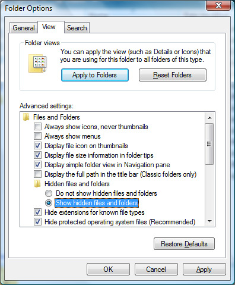

Accessing hidden folders
On Windows the logs are stored in locations that are hidden by default. To enable navigating to them in the Windows Explorer please perform the steps below.
Show hidden folders on Windows XP
The Local Settings folder is hidden by default. In order to see it, you have to enable viewing of hidden folders in Windows Explorer from .

Enabling viewing of hidden folders in Windows XP
Show hidden folders on Windows Vista/7
The AppData folder is hidden by default. In order to see it, you have to enable viewing of hidden folders in Windows Explorer from . The Tools menu is hidden by default, but can be displayed by pressing the Alt key once.

Enabling viewing of hidden folders in Windows Vista
Enabling viewing of hidden folders in Windows Vista
Page last updated: 2010-09-17